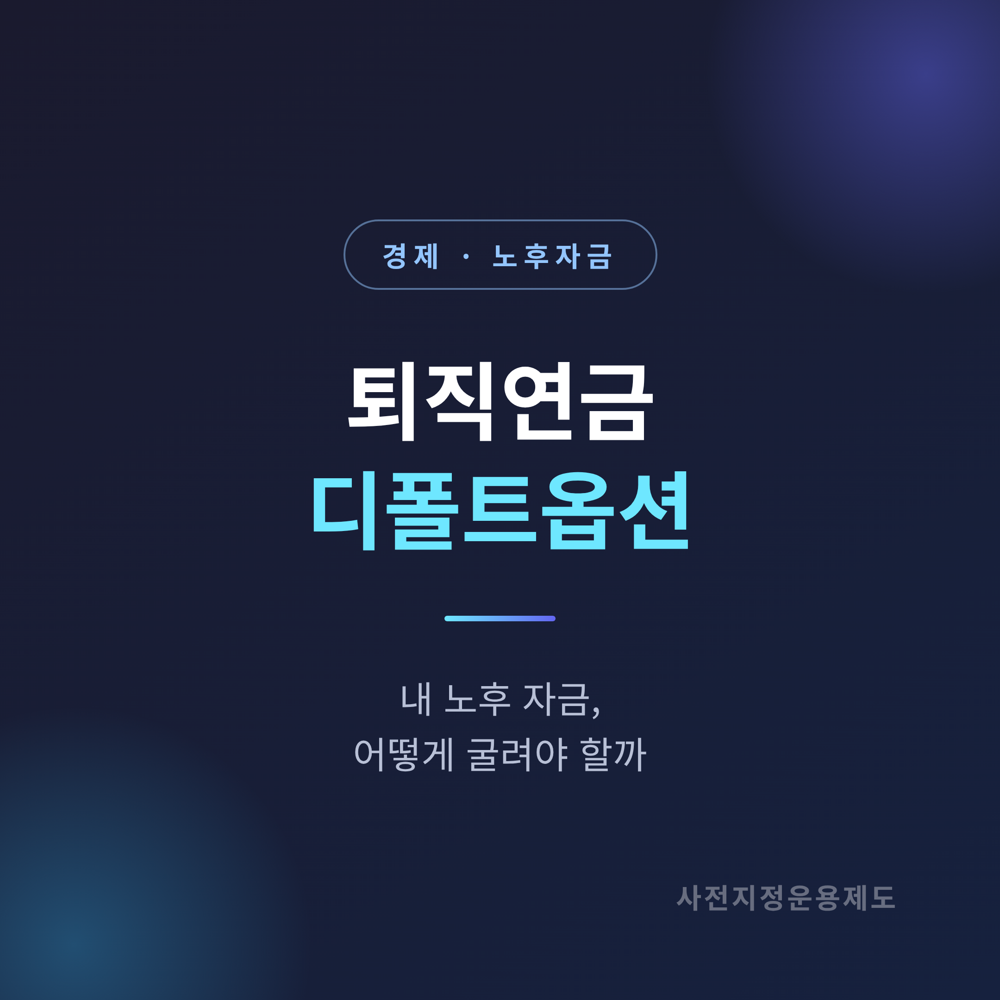
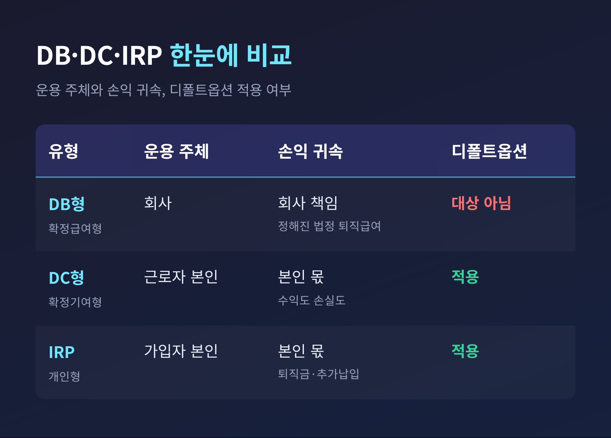
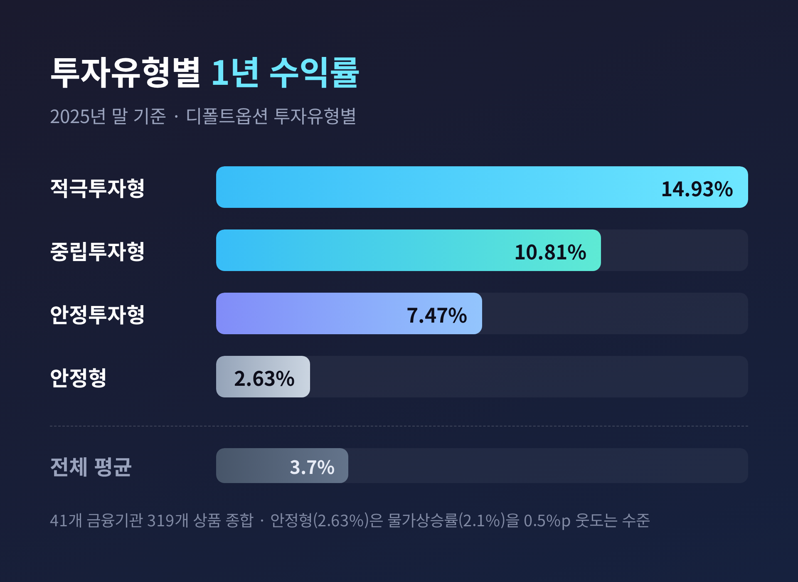
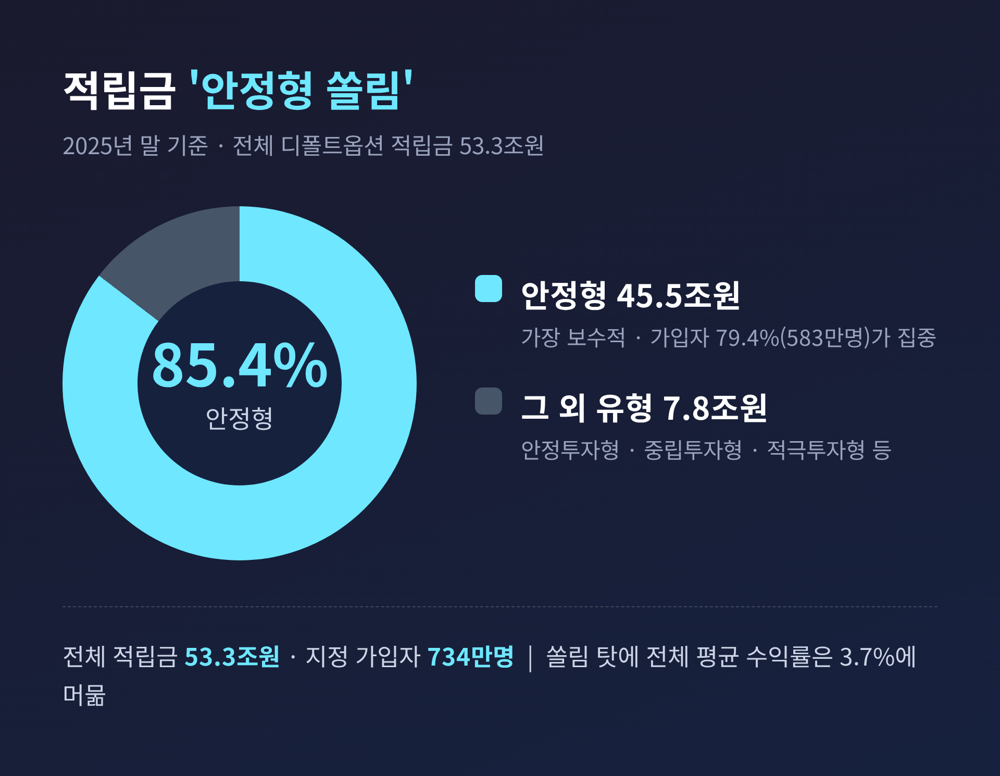

퇴직연금 디폴트옵션, 내 노후 자금 어떻게 굴려야 하나
이번 글에서는 퇴직연금 디폴트옵션을 정리해 보겠습니다. 제도가 무엇인지, 어떤 유형이 있는지, 왜 '안정형 쏠림'이 문제로 지적되는지를 차례로 짚습니다. 다만 미리 분명히 해 둘 것이 있습니다. 이 글은 특정 상품을 권하는 글이 아니라 정보를 정리한 글이며, 최종 판단은 독자 여러분의 몫입니다.

디폴트옵션이란 무엇인가
디폴트옵션의 법령상 정식 명칭은 '사전지정운용제도'입니다. '디폴트옵션'은 그 별칭입니다.
쉽게 말하면 이렇습니다. DC형(확정기여형)이나 IRP(개인형) 가입자가 적립금을 어떻게 굴릴지 따로 지시하지 않을 때, 미리 정해 둔 방법으로 돈이 자동 운용되도록 하는 제도입니다. 가입자가 아무것도 하지 않아도, 사전에 지정한 상품으로 자동 매수가 이뤄지는 셈입니다.
도입 배경은 단순합니다. 그동안 퇴직연금이 운용 지시 없이 방치돼, 현금성 자산으로 남아 수익을 거의 내지 못하는 문제가 컸습니다. 이를 막고 장기 수익률을 높이려는 취지였습니다.
2022년 7월 관련 법률이 마련됐고, 1년 유예기간을 거쳐 2023년 7월 12일부터 본격 시행됐습니다.
작동 방식도 알아 둘 만합니다. 운용 지시를 하지 않으면 대략 2주가 지난 뒤 디폴트옵션 상품으로 자동 투자됩니다. 세부 기간은 사업자나 상황에 따라 조금씩 다르게 안내될 수 있습니다.
DB·DC·IRP, 그리고 적용 대상
퇴직연금은 크게 세 가지로 나뉩니다.
- DB형(확정급여형): 회사가 운용하고, 손익도 회사가 책임집니다. 퇴직 시 정해진 법정 퇴직급여를 받습니다.
- DC형(확정기여형): 회사가 매년 임금총액의 1/12 이상을 근로자 계좌에 적립하고, 근로자가 직접 운용합니다. 수익도 손실도 본인 몫입니다.
- IRP(개인형퇴직연금): 소득이 있는 개인이 직접 가입하는 계좌입니다. 이직·퇴직 때 받은 퇴직금을 모으거나 추가로 납입할 수 있습니다.
디폴트옵션은 이 가운데 DC형과 IRP 가입자에게 적용됩니다. 운용 주체가 가입자 본인이기 때문입니다. 회사가 직접 운용하는 DB형은 대상이 아닙니다.
참고로 DC형은 위험자산에 적립금의 최대 70%까지 투자할 수 있습니다.

어떤 상품이 있고, 위험등급은 어떻게 나뉘나
디폴트옵션 상품은 크게 원리금보장형, 실적배당형(펀드), 그리고 둘을 섞은 포트폴리오형으로 구성됩니다. 펀드 유형으로는 TDF(타깃데이트펀드), BF(밸런스드펀드), SVF, SOC 등이 허용됩니다.
위험등급 명칭은 2025년 4월에 바뀌었습니다. 가입자가 위험을 과소평가하지 않도록 손본 것입니다.
| 기존 명칭 | 변경 명칭(2025.4~) |
|---|---|
| 초저위험 | 안정형 |
| 저위험 | 안정투자형 |
| 중위험 | 중립투자형 |
| 고위험 | 적극투자형 |
여기서 핵심 펀드가 TDF입니다. TDF는 은퇴 목표 시점(예: TDF2045)에 다가갈수록 주식 비중을 줄이고 채권·현금 비중을 늘려, 자동으로 보수적으로 바꿔 갑니다. 이 경로를 '글라이드 패스'라고 부릅니다. 빈티지 숫자는 보통 5년 단위로, 가입자의 예상 은퇴 연도를 뜻합니다.
수익률은 얼마나 차이가 났나
2025년 말 기준 투자유형별 1년 수익률은 아래와 같았습니다.
| 투자유형 | 1년 수익률 |
|---|---|
| 적극투자형 | 14.93% |
| 중립투자형 | 10.81% |
| 안정투자형 | 7.47% |
| 안정형 | 2.63% |
| 전체 평균 | 3.7% |
41개 금융기관의 319개 상품을 종합한 연간 평균 수익률이 3.7%였습니다. 가장 보수적인 안정형(2.63%)은 같은 기간 소비자물가 상승률(2.1%)을 약 0.5%포인트 웃도는 데 그쳤습니다.
차이가 작지 않습니다. 적극투자형이 두 자릿수 수익을 내는 동안, 안정형은 물가를 겨우 넘어선 셈입니다.

'안정형 쏠림'이라는 문제
2025년 말 기준 전체 적립금은 53조 3,000억원, 지정 가입자는 734만명입니다. 전년 대비 적립금은 32.9%, 가입자는 16.3% 늘었습니다. 제도별로는 DC형 34조 3,000억원, IRP 19조원입니다.
문제는 쏠림입니다. 전체 적립금의 85.4%(45조 5,000억원), 가입자의 79.4%(583만명)가 가장 보수적인 안정형에 몰려 있습니다.
그래서 적극투자형 같은 일부 유형이 두 자릿수 수익을 내도, 전체 평균은 3.7%에 머뭅니다. 펀드 운용에 대한 이해와 신뢰가 부족한 점이 쏠림의 근본 원인으로 지목됩니다.

가입자들이 자주 하는 실수
리서치에서 반복적으로 언급된 실수는 다음과 같습니다.
- 끝내 디폴트옵션을 지정하지 않아, 만기 자금이 현금성으로 남아 수익을 거의 못 내는 경우.
- 본인 성향과 무관하게 무조건 안정형에만 두는 경우.
- 한 번 지정해 두고 그대로 방치하는 경우.
특히 세 번째가 눈에 띕니다. 지정만 해 두고 점검하지 않으면, 장기 복리의 효과를 살리기 어렵다는 지적입니다.
방치의 비용을 두고는, 한 매체가 "초저금리에 묻어두면 10년이면 약 3,740만원 차이"가 날 수 있다고 보도하기도 했습니다. 다만 이는 특정 가정에 기반한 언론사 시뮬레이션 추정치이며, 보장된 수치가 아닙니다.
갈아타기와 2026년의 변화
2024년 10월 31일에는 실물이전 제도가 도입됐습니다. 기존 상품을 해지하지 않고도 운용사·금융회사를 옮길 수 있게 한 제도입니다. 시행 이후 수익률을 좇아 은행에서 증권사로 자금이 이동하는 흐름이 나타났습니다.
다만 실물이전은 양쪽에서 같은 상품을 취급해야 옮길 수 있는 등 제약이 있습니다. 모든 상품이 그대로 이전되지는 않습니다.
사업자별 수익률은 은행연합회 소비자포털(portal.kfb.or.kr)에서 직접 비교할 수 있습니다.
제도 자체도 움직이고 있습니다. 2026년 2월 노사정 태스크포스가 퇴직연금 의무화 도입에 합의했고, 민간 금융회사가 설립한 기금을 선택해 운용하는 안도 함께 논의됐습니다. 고용노동부는 2026년 7월 구체적 도입 방안 발표를 목표로 잡았습니다.
정리하면 이렇습니다.
디폴트옵션은 방치되던 노후 자금에 '자동 운용'이라는 길을 열어 준 제도입니다. 하지만 자동이라는 말이 곧 최선을 뜻하지는 않습니다. 수익률 차이가 유형별로 분명하고, 다수가 안정형에 머물러 있다는 점도 함께 보아야 합니다.
다시 강조하지만, 이 글은 정보 제공일 뿐 투자 권유가 아닙니다. 어떤 유형이 적절한지는 사람마다 다릅니다.
"한 번 지정하고 끝이 아니라, 내 은퇴 시점과 성향에 맞춰 가끔 들여다보는 것."
결국 내 노후 자금을 가장 오래, 가장 가까이 지켜보는 사람은 나 자신입니다. 오늘 한 번, 내 퇴직연금이 지금 어디에 담겨 있는지 확인해 보시는 건 어떨까요.